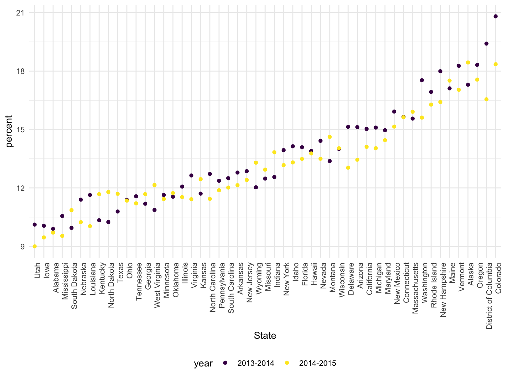
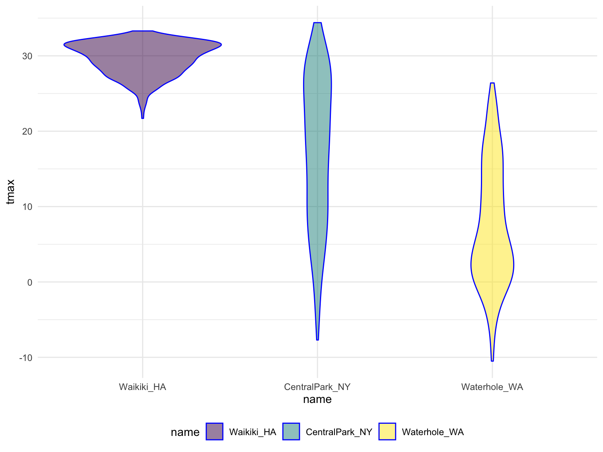
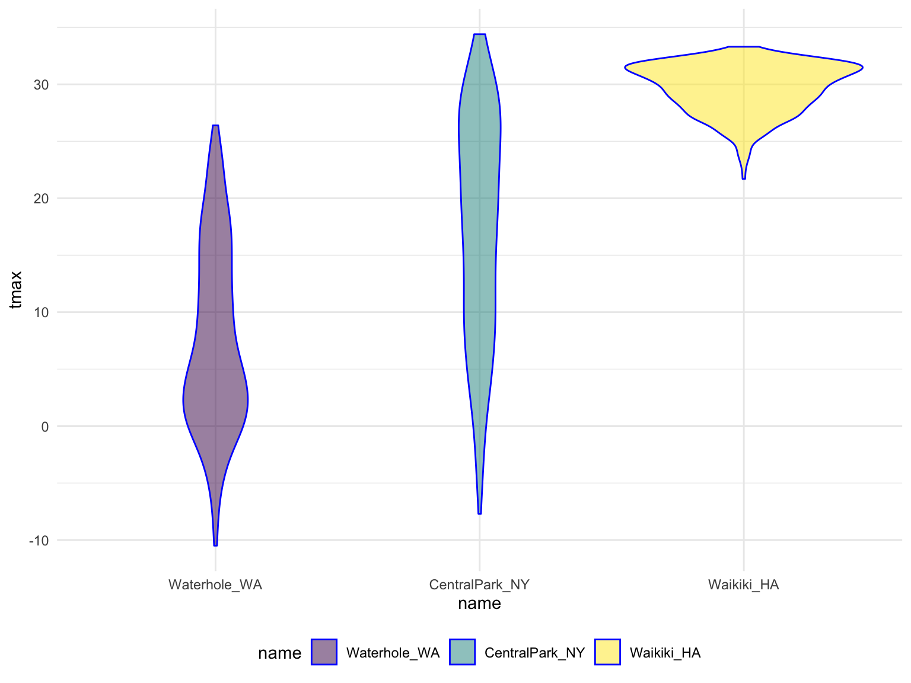
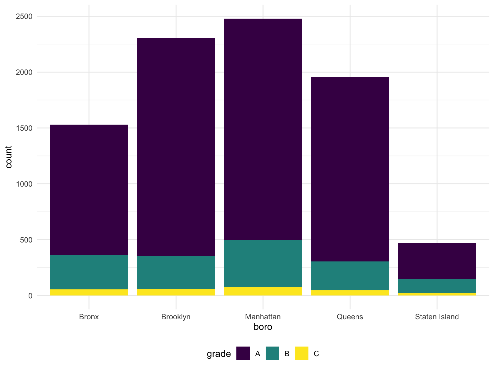
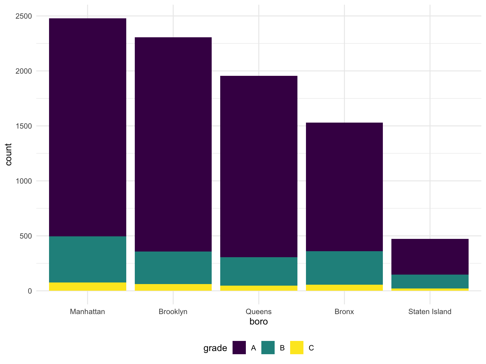
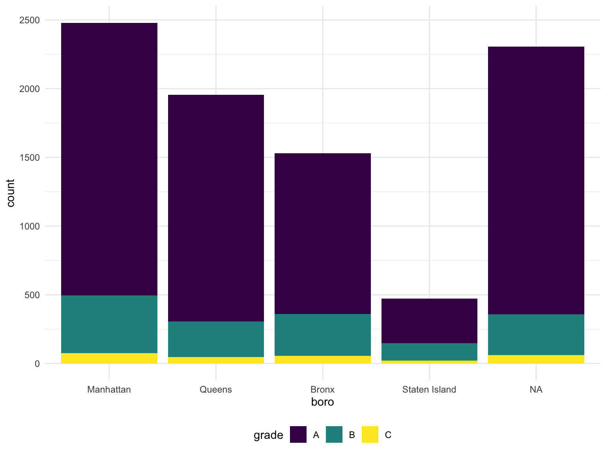

Strings and factors
Most of the tools we examined in Data Wrangling I were general purpose things – what tidy data is, using dplyr and tidyr for manipulation of data tables. Two variable types, strings and factors, present enough challenges to examine in some detail. Now might also be a good time to read up on the history of strings and factors in R!
This is the second module in the Data Wrangling II topic; the relevant slack channel is here.
Example
I’ll write code for today’s content in a new R Markdown document called strings_and_factors.Rmd, and put it in the same directory / GitHub repo as reading_data.Rmd. Since we’ll revisit some scraped examples, I’ll load rvest now; we’ll also use some datasets in p8105.datasets so I’ll load that as well.
library(rvest)
library(p8105.datasets)Strings and regex
Lots of the examples below are drawn from materials by Jeff Leek.
The most frequent operation involving strings is to search for an exact match. You can use str_detect to find cases where the match exists (often useful in conjunction with filter), and you can use str_replace to replace an instance of a match with something else (often useful in conjunction with mutate). In the following examples we’ll mostly focus on vectors to avoid the complication of data frames, but we’ll see those shortly.
string_vec = c("my", "name", "is", "jeff")
str_detect(string_vec, "jeff")
## [1] FALSE FALSE FALSE TRUE
str_replace(string_vec, "jeff", "Jeff")
## [1] "my" "name" "is" "Jeff"For exact matches, you can designate matches at the beginning or end of a line.
string_vec = c(
"i think we all rule for participating",
"i think i have been caught",
"i think this will be quite fun actually",
"it will be fun, i think"
)
str_detect(string_vec, "^i think")
## [1] TRUE TRUE TRUE FALSE
str_detect(string_vec, "i think$")
## [1] FALSE FALSE FALSE TRUEYou can designate a list of characters that will count as a match.
string_vec = c(
"Y'all remember Pres. HW Bush?",
"I saw a green bush",
"BBQ and Bushwalking at Molonglo Gorge",
"BUSH!!"
)
str_detect(string_vec,"[Bb]ush")
## [1] TRUE TRUE TRUE FALSEYou don’t have to list these; instead, you can provide a range of letters or numbers that count as a match.
string_vec = c(
'7th inning stretch',
'1st half soon to begin. Texas won the toss.',
'she is 5 feet 4 inches tall',
'3AM - cant sleep :('
)
str_detect(string_vec, "^[0-9][a-zA-Z]")
## [1] TRUE TRUE FALSE TRUEThe character . matches anything.
string_vec = c(
'Its 7:11 in the evening',
'want to go to 7-11?',
'my flight is AA711',
'NetBios: scanning ip 203.167.114.66'
)
str_detect(string_vec, "7.11")
## [1] TRUE TRUE FALSE TRUESome characters are “special”. These include [ and ], ( and ), and .. If you want to search for these, you have to indicate they’re special using \. Unfortunately, \ is also special, so things get weird.
string_vec = c(
'The CI is [2, 5]',
':-]',
':-[',
'I found the answer on pages [6-7]'
)
str_detect(string_vec, "\\[")
## [1] TRUE FALSE TRUE TRUEThere are a lot of other regular expression resources; we’re really only scratching the surface. The stuff we have already will be useful and it’s probably not worth going down the regex rabbit hole. That said, it’s helpful to know what other functions exist in stringr – you should at least know they exist even if you don’t know exactly how they work right now!
PULSE data
We’ll start by revisiting a dataset we’ve seen a few times now. In tidy data we spent some time tidying the PULSE dataset; as part of that we used tools available to us at the time, but now we have some better tools.
The code below updates the data processing pipeline for the PULSE data using stringr and forcats. The result is the same, and the differences are pretty small, but this is a bit cleaner.
pulse_data = haven::read_sas("./data/public_pulse_data.sas7bdat") %>%
janitor::clean_names() %>%
gather(key = visit, value = bdi, bdi_score_bl:bdi_score_12m) %>%
mutate(visit = str_replace(visit, "bdi_score_", ""),
visit = str_replace(visit, "bl", "00m"),
visit = fct_relevel(visit, str_c(c("00", "01", "06", "12"), "m"))) %>%
arrange(id, visit)
## Warning: attributes are not identical across measure variables;
## they will be dropped
print(pulse_data, n = 12)
## # A tibble: 4,348 x 5
## id age sex visit bdi
## <dbl> <dbl> <chr> <fct> <dbl>
## 1 10003 48.0 male 00m 7
## 2 10003 48.0 male 01m 1
## 3 10003 48.0 male 06m 2
## 4 10003 48.0 male 12m 0
## 5 10015 72.5 male 00m 6
## 6 10015 72.5 male 01m NA
## 7 10015 72.5 male 06m NA
## 8 10015 72.5 male 12m NA
## 9 10022 58.5 male 00m 14
## 10 10022 58.5 male 01m 3
## 11 10022 58.5 male 06m 8
## 12 10022 58.5 male 12m NA
## # ... with 4,336 more rowsNSDUH
Next we’ll revisit the table scraped from the National Survey on Drug Use and Health data on this page. In reading data from the web, we loaded this data using the code below, but noted it wasn’t tidy.
url = "http://samhda.s3-us-gov-west-1.amazonaws.com/s3fs-public/field-uploads/2k15StateFiles/NSDUHsaeShortTermCHG2015.htm"
drug_use_xml = read_html(url)
table_marj = (drug_use_xml %>% html_nodes(css = "table")) %>%
.[[1]] %>%
html_table() %>%
slice(-1) %>%
as_tibble()There are a few steps we need to implement to tidy these data. For now I’m not interested in the p-values (I’d rather just see the data); we also have age groups and year ranges in column titles, both of which are, in fact, variables. Lastly, the table includes letters as superscripts next to table entries; if we only want the percents we’ll need to strip these out.
data_marj =
table_marj %>%
select(-contains("P Value")) %>%
gather(key = key, value = percent, -State) %>%
separate(key, into = c("age", "year"), sep = "\\(") %>%
mutate(year = str_replace(year, "\\)", ""),
percent = str_replace(percent, "[a-c]$", ""),
percent = as.numeric(percent)) %>%
filter(!(State %in% c("Total U.S.", "Northeast", "Midwest", "South", "West")))We used stringr and regular expressions a couple of times above:
- in
separate, we split age and year at the open parentheses using"\\(" - we stripped out the close parenthesis in
mutate - to remove character superscripts, we replaced any character using
"[a-c]$"
Let’s quickly visualize these data for the 12-17 age group; to make the plot readable, we’ll treat State as a factor are reorder according to percent.
data_marj %>%
filter(age == "12-17") %>%
mutate(State = fct_reorder(State, percent)) %>%
ggplot(aes(x = State, y = percent, color = year)) +
geom_point() +
theme(axis.text.x = element_text(angle = 90, hjust = 1))
Toothbrush reviews
We were able to scrape toothbrush reviews for a single review page in reading data from the web. If we want to scrape more reviews, it’s necessary to construct the URLs for several review pages. This is possible based on an observation about the the structure of the URL for the first page of reviews – it ended with pageNumber=1 and, sure enough, changing this to pageNumber=2 will bring up the second page of reviews.
url_base = "https://www.amazon.com/product-reviews/B00005JNBQ/ref=cm_cr_arp_d_viewopt_rvwer?ie=UTF8&reviewerType=avp_only_reviews&sortBy=recent&pageNumber="
urls = str_c(url_base, 1:5)
read_html(urls[1]) %>%
html_nodes("#cm_cr-review_list .review-title") %>%
html_text()
## [1] "Great Movie"
## [2] "True to life!"
## [3] "Classic family friendly comedy kids can relate to!"
## [4] "Great \"Odd Ball\" movie to watch"
## [5] "Nostalgic Stupidity"
## [6] "Happy"
## [7] "Go watch THE ROCK or dumb & dumber instead"
## [8] "My mom loves it"
## [9] "Nothing Quite Like It."
## [10] "Has pretty sweet bow skills."
read_html(urls[2]) %>%
html_nodes("#cm_cr-review_list .review-title") %>%
html_text()
## [1] "Great"
## [2] "Fast delivery"
## [3] "Lol"
## [4] "Vote For Pedro"
## [5] "So funny!"
## [6] "Great move"
## [7] "Refund needed. Did not pay through Amazon prime."
## [8] "Need a laugh?"
## [9] "The greatest!"
## [10] "Five Stars"It would get really tedious to try to scrape all (~2500) reviews by copying code over and over; before long we’ll learn about writing R functions to reuse code and make this much easier!
Thoughts on factors
Factors are maybe the least intuitive of R’s data types. They are very useful, but they also do things you don’t expect; this is especially bad when you have factors but think you have characters – which happens more than you’d expect, because R uses factors a lot (mostly for historical reasons). Folks get pretty riled up about factors.
Factors are the way to store categorical variables in R. They can take on specific levels (e.g. male and female) which are usually presented as characters but are, in fact, stored by R as integers. These integer values are used by functions throughout R – in making plots, in organizing tables, in determining the “reference” category – but most of the time are hidden by easier-to-read character strings.
This is the kind of thing that can get you in trouble.
vec_sex = factor(c("male", "male", "female", "female"))
as.numeric(vec_sex)
## [1] 2 2 1 1
vec_sex = relevel(vec_sex, ref = "male")
vec_sex
## [1] male male female female
## Levels: male female
as.numeric(vec_sex)
## [1] 1 1 2 2The previous code also illustrates coersion: forcing a variable from one type (e.g. factor) to another (e.g. numeric). Understanding how R coerces variables is important, because it sometimes happens unintentionally and can break your code or impact your analyses.
Previous Factor Examples
We’ve seen factors a few times already, especially in Viz Pt 2. In that case, we were interested in reordering a factor variable in order to produce clearer plots – ggplot uses factor levels to determine the order in which categories appear. Let’s revisit those examples now.
Our first step is to load the data we used.
weather_df =
rnoaa::meteo_pull_monitors(c("USW00094728", "USC00519397", "USS0023B17S"),
var = c("PRCP", "TMIN", "TMAX"),
date_min = "2017-01-01",
date_max = "2017-12-31") %>%
mutate(
name = recode(id, USW00094728 = "CentralPark_NY",
USC00519397 = "Waikiki_HA",
USS0023B17S = "Waterhole_WA"),
tmin = tmin / 10,
tmax = tmax / 10) %>%
select(name, id, everything())
weather_df
## # A tibble: 1,095 x 6
## name id date prcp tmax tmin
## <chr> <chr> <date> <dbl> <dbl> <dbl>
## 1 CentralPark_NY USW00094728 2017-01-01 0 8.9 4.4
## 2 CentralPark_NY USW00094728 2017-01-02 53 5 2.8
## 3 CentralPark_NY USW00094728 2017-01-03 147 6.1 3.9
## 4 CentralPark_NY USW00094728 2017-01-04 0 11.1 1.1
## 5 CentralPark_NY USW00094728 2017-01-05 0 1.1 -2.7
## 6 CentralPark_NY USW00094728 2017-01-06 13 0.6 -3.8
## 7 CentralPark_NY USW00094728 2017-01-07 81 -3.2 -6.6
## 8 CentralPark_NY USW00094728 2017-01-08 0 -3.8 -8.8
## 9 CentralPark_NY USW00094728 2017-01-09 0 -4.9 -9.9
## 10 CentralPark_NY USW00094728 2017-01-10 0 7.8 -6
## # ... with 1,085 more rowsOur first example reordered name “by hand” using fct_relevel:
weather_df %>%
mutate(name = forcats::fct_relevel(name, c("Waikiki_HA", "CentralPark_NY", "Waterhole_WA"))) %>%
ggplot(aes(x = name, y = tmax)) +
geom_violin(aes(fill = name), color = "blue", alpha = .5) +
theme(legend.position = "bottom")
## Warning: Removed 3 rows containing non-finite values (stat_ydensity).
A second example reordered name according to tmax values in each name using fct_reorder:
weather_df %>%
mutate(name = forcats::fct_reorder(name, tmax)) %>%
ggplot(aes(x = name, y = tmax)) +
geom_violin(aes(fill = name), color = "blue", alpha = .5) +
theme(legend.position = "bottom")
## Warning: Removed 3 rows containing non-finite values (stat_ydensity).
Although you may not have seen linear regression previously, the ordering of factor variables play an important in this case as well. Specifically, the ordering determines the “reference” category, and is something that can be adjusted as needed:
weather_df %>%
lm(tmax ~ name, data = .)
##
## Call:
## lm(formula = tmax ~ name, data = .)
##
## Coefficients:
## (Intercept) nameWaikiki_HA nameWaterhole_WA
## 17.366 12.291 -9.884
weather_df %>%
mutate(name = forcats::fct_relevel(name, c("Waikiki_HA", "CentralPark_NY", "Waterhole_WA"))) %>%
lm(tmax ~ name, data = .)
##
## Call:
## lm(formula = tmax ~ name, data = .)
##
## Coefficients:
## (Intercept) nameCentralPark_NY nameWaterhole_WA
## 29.66 -12.29 -22.18Restaurant inspections
As a final example of strings and factors, we’ll take a look at the NYC Restuarant Inspections data. Although we won’t talk about this in detail now, it’s worth mentioning that these data were collected using the NYC Open Data API; code is available with the data description.
First we’ll import the data and take a look.
data(rest_inspec)
rest_inspec %>%
group_by(boro, grade) %>%
summarize(n = n()) %>%
spread(key = grade, value = n)
## # A tibble: 6 x 8
## # Groups: boro [6]
## boro A B C `Not Yet Graded` P Z `<NA>`
## <chr> <int> <int> <int> <int> <int> <int> <int>
## 1 BRONX 13688 2801 701 200 163 351 16833
## 2 BROOKLYN 37449 6651 1684 702 416 977 51930
## 3 MANHATTAN 61608 10532 2689 765 508 1237 80615
## 4 Missing 4 NA NA NA NA NA 13
## 5 QUEENS 35952 6492 1593 604 331 913 45816
## 6 STATEN ISLAND 5215 933 207 85 47 149 6730To simplify things, I’ll remove inspections with scores other than A, B, or C, and also remove the restaurants with missing boro information. I’ll also clean up boro names a bit.
rest_inspec =
rest_inspec %>%
filter(grade %in% c("A", "B", "C"), boro != "Missing") %>%
mutate(boro = str_to_title(boro))Let’s focus only on pizza places for now, and re-examine grades by boro.
rest_inspec %>%
filter(str_detect(dba, "Pizza")) %>%
group_by(boro, grade) %>%
summarize(n = n()) %>%
spread(key = grade, value = n)
## # A tibble: 5 x 3
## # Groups: boro [5]
## boro A B
## <chr> <int> <int>
## 1 Bronx 9 3
## 2 Brooklyn 6 NA
## 3 Manhattan 26 8
## 4 Queens 17 NA
## 5 Staten Island 5 NAThat doesn’t look right – for sure there are more pizza place ratings than that! The problem is that the match in str_detect is case-sensitive until we tell it not to be:
rest_inspec %>%
filter(str_detect(dba, "[Pp][Ii][Zz][Zz][Aa]")) %>%
group_by(boro, grade) %>%
summarize(n = n()) %>%
spread(key = grade, value = n)
## # A tibble: 5 x 4
## # Groups: boro [5]
## boro A B C
## <chr> <int> <int> <int>
## 1 Bronx 1170 305 56
## 2 Brooklyn 1948 296 61
## 3 Manhattan 1983 420 76
## 4 Queens 1647 259 48
## 5 Staten Island 323 127 21The table is okay but I’d like to visualize this.
rest_inspec %>%
filter(str_detect(dba, "[Pp][Ii][Zz][Zz][Aa]")) %>%
ggplot(aes(x = boro, fill = grade)) +
geom_bar() +
scale_fill_viridis(discrete = TRUE)
Might help to have things in a different order – maybe number of pizza places? Fortunately this can be done using fct_infreq.
rest_inspec %>%
filter(str_detect(dba, "[Pp][Ii][Zz][Zz][Aa]")) %>%
mutate(boro = fct_infreq(boro)) %>%
ggplot(aes(x = boro, fill = grade)) +
geom_bar() +
scale_fill_viridis(discrete = TRUE)
Suppose I want to rename a boro; I’ll try to do this using replace.
rest_inspec %>%
filter(str_detect(dba, "[Pp][Ii][Zz][Zz][Aa]")) %>%
mutate(boro = fct_infreq(boro),
boro = replace(boro, which(boro == "Brooklyn"), "HipsterHQ")) %>%
ggplot(aes(x = boro, fill = grade)) +
geom_bar() +
scale_fill_viridis(discrete = TRUE)
## Warning in `[<-.factor`(`*tmp*`, list, value = "HipsterHQ"): invalid factor
## level, NA generated
That didn’t work at all! Factors have very specific values, trying to use a value that is not an existing factor level won’t work. Fortunately there is a dedicated function for renaming factor levels:
rest_inspec %>%
filter(str_detect(dba, regex("pizza", ignore_case = TRUE))) %>%
mutate(boro = fct_infreq(boro),
boro = fct_recode(boro, "HipsterHQ" = "Brooklyn")) %>%
ggplot(aes(x = boro, fill = grade)) +
geom_bar() +
scale_fill_viridis(discrete = TRUE)
Success!
Other materials
- R for Data Science has chapters on both strings / regex and factors
- There are useful materials by Jenny Bryan on strings / regex and factors as well
- Dealing with text entries can be a real challenge
- Cheatsheet for stringr
The code that I produced working examples in lecture is here.